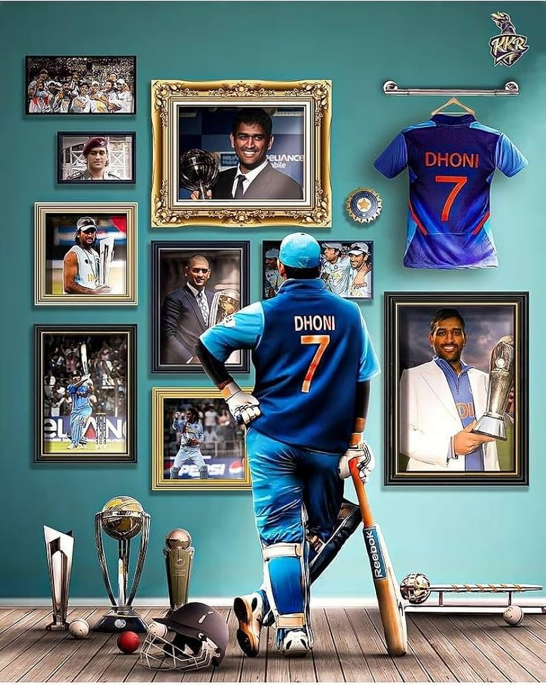

1.Rohith Sharma

His full name is Rohit Gurunath Sharma. He was born on April 30, 1987, in Nagpur, and his grandparents brought him up in Mumbai. He is also referred to as "Hit Man".
Rohith2.Virat Kohli

He is the most well-liked cricketer from India. He is also well-known as a "Run Machine." His nickname is "Cheeku". He was born on November 5, 1988, in Delhi. He is the first player who records four double centuries in four successive Test series.
Kohli3.MS.Dhoni

His full name is Mahendra Singh Dhoni. He is one of the best batsmen and captains in Indian history. His nickname is "Mahi". He was born on July 7, 1981, in Ranchi. He is a right-handed batsman.
Dhoni4.Virender Sehwag

He is one of India's most destructive cricketers and a professional batsman. His nickname is "Viru". He was born on October 20, 1978, in Najafgarh. He is a right-handed batsman, and he is regarded as one of India's greatest cricketers of all time.
Sehwag5.Sachin Tendulkar

He is one of the greatest cricketers in history. His nickname is "Master Blaster". He was born on April 24, 1973, in Bombay. He has scored more than 18000 runs overall, and 15000 runs total in the ODI and Test formats, respectively.
SachinRelative Path
Formatting Tags
captain ms dhoni captain ms dhoni captain ms dhoni captain ms dhoni captain ms dhoni captain ms dhoni captain ms dhoni